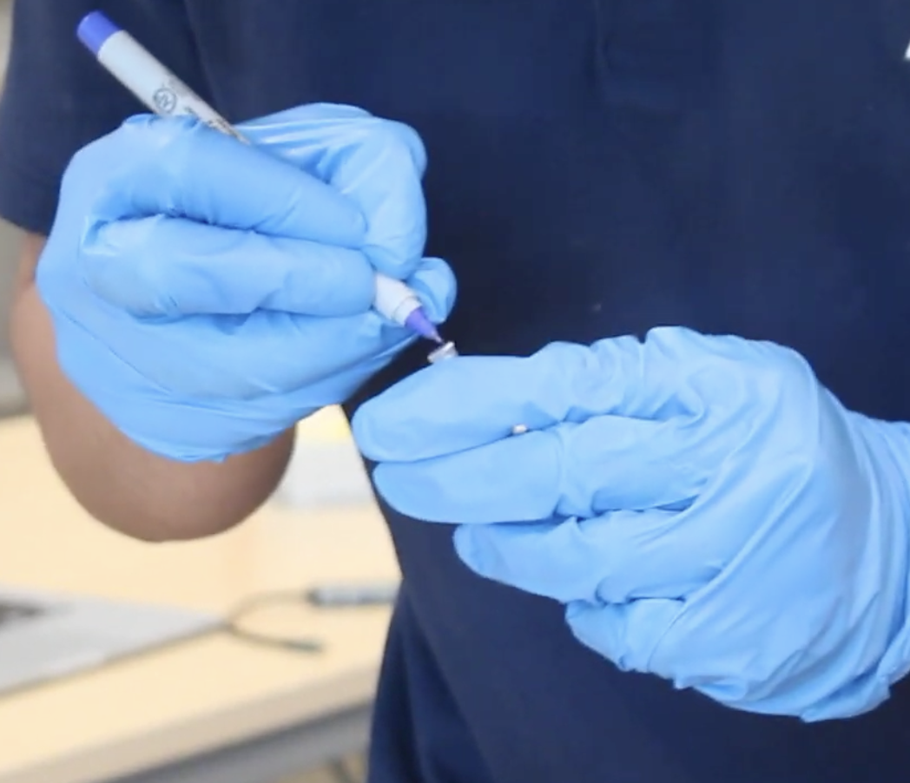

My name is saqib.
my dna project in my 9th grade new media and tech class was quite intresting so lets start from the beginning in my new media and tech class our teacher mr sinusas created a project where we would swab our cheek and then put into a machine to see who we would match with and then we predeicted to see who we would match with and it was very fun we would use the pipet then we would put it into the machine and then in a pcr after we put it in the machine we had to wait a couple days and in the meantime we got to record some interviews about the project which was very fun and everyone enjoyed it.

after our predictions we all got the results and we were shocked because almost everyone had predicted to match with someone same race and identity as them and as we all loked at the results we had thought that the results would be like that right? no almost everyone was completely off we seen that people from diffirent parts of the world with diffirent races with diffirent identitys had matched with eachother it was unbelievable everyone was wondering how because only a couple people had matched with someone with the same race ethniciy or race as them but majority of people were diffirent and we had found out that race ethinicy and identity have nothing to do with dna which was shocking but also something new to learn which had everyone shocked.
i believe i improved my communication and collobaration skills greatly by filling out the collab contract with my team we would all ask eachother for ideas and everyone had a chance to speak and we collabed on it also with the rosaland franklin project we also collabed on it and made dna models which we collabed and communicated on we also made an interview about our dna project which was really fun because we had alot of communcation and collobration going on and the dna project we did alot of commmuncation and collobaration by using peptides gather photos and videos for eachother and labeling pcrs which was very enjoyable because at first i would be a little shy because i had new teamates but after all those great experiences that we had i felt my communcation and collobrartion skills had evolved greatly.
